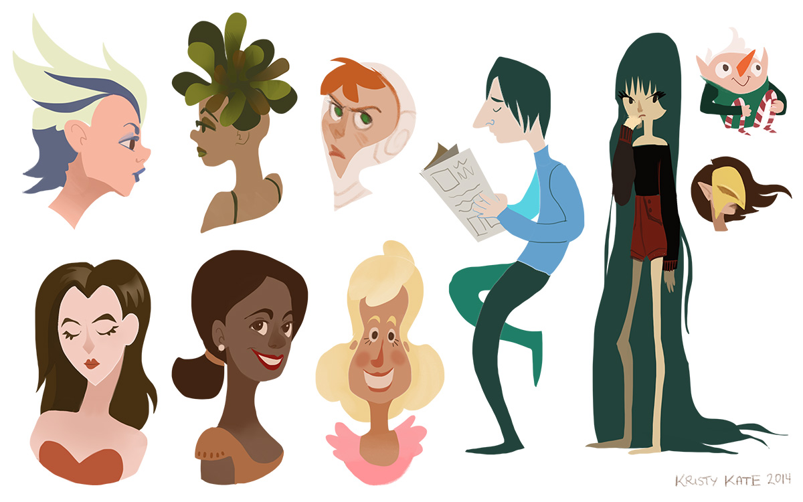
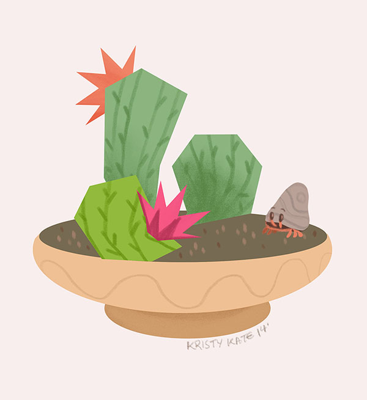

Week 20 Studies
August 4th - 10th
More fun with PS lasso tool characters:

I'm also taking part in Spoonflower's #SpoonChallenge.
Here's Day 1 - Cactus:

Roughly 3(?) days behind at the moment, but I plan to catch up soon!
Until next time,
x Kristy Kate
+ + +
Have any thoughts on my sketches? Join me on my creative journey and share your own by leaving a comment (critique welcome) or connecting via Twitter or Facebook.